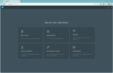
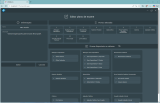
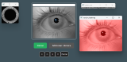
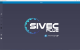
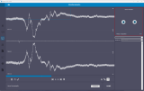
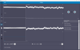
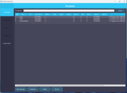
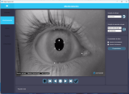
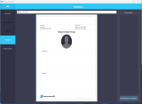

Portifólio profissional
Conheça meus principais projetos
VD360
O VD360 é o software que trabalho com prioridade atualmente, moderno e altamente modular, com frontend em React + Typescript e backend em Python, usando PostgreSQL. Ele integra múltiplos dispositivos, realiza detecção de pupilas em tempo real, realiza a análise de sinais, gera estímulos visuais e cria rotinas personalizadas. A arquitetura prioriza modularidade, escalabilidade e evolução contínua, oferecendo alta performance e flexibilidade para novos recursos.



Sivec Plus
É um software robusto de aquisição e análise de sinais, que recebe dados via interface serial do hardware, processa e interpreta sinais em tempo real, realiza comparações com bases de referência e gera relatórios personalizados. Construído em C# e PostgreSQL, o sistema foca em performance e confiabilidade.



Video Frenzel
Software de captura e processamento de imagens de alta resolução para análise ocular, com C# e PostgreSQL. O sistema realiza aquisição de imagens, edição de vídeo, inserção de anotações e geração de relatórios personalizados.


